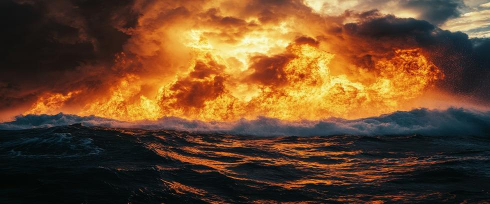

On Runit Island, beneath the blue skies of the Marshall Islands, a relic of nuclear testing is disintegrating under the tropical sun. Looking like the top half of a giant flying saucer, Runit Dome is a smooth concrete structure containing over 3.1 million cubic feet of contaminated soil and radioactive waste from nuclear testing in the South Pacific. Called “The Tomb” by locals, the inscription on its crest simply reads 1979.
But this tomb was never built to last. Cracks are visible in its 18” thick surface, and evidence shows that it’s already leaking. A 2013 report by the US Department of Energy concluded that the soil around the dome has become more radioactive each year. Researchers at Australia’s University of New South Wales confirm that plutonium levels are rising in the South China Sea, carried 3,000 miles by ocean currents from the Marshall Islands. No one knows how much is coming from the Tomb, but no one doubts it’s radioactive waste left over from nuclear testing in the Marshalls.
Far more radiation is involved than at Chernobyl and Fukushima combined. With its base barely above sea level, the Tomb is extremely vulnerable to typhoons or tsunamis. If it fails, the radioactive sludge it contains will spill into the Pacific Ocean with horrific consequences. Yet experts say the question is no longer if the Tomb fails, but when it fails.
A Temporary Solution With a Permanent Cost
Between 1946 and 1958, the United States conducted 67 nuclear tests in the Marshall Islands. Bikini Atoll became synonymous with anything radioactive, while Enewetak Atoll was ground zero for dozens of atmospheric tests. Egluab Island disappeared from the map entirely.
When testing ended, the US Navy removed radioactive soil and nuclear waste from the most contaminated islands – but not from the region itself. Instead, they cleaned out a crater from a previous nuclear test and dumped the waste inside before covering it with unlined concrete panels. Groundwater was already being contaminated, but planners hoped the dome would stop more radiation from leaching into the ocean.
It was a temporary solution with a permanent cost.
A Cracking Coffin
Decades later, the Tomb is still deteriorating. New cracks are appearing, while saltwater seeps into and out of the unsealed crater below. Waves crash against the structure during storms, and a typhoon would be devastating. But what to do with this bizarre monstrosity?
In 2013, a US Department of Energy report acknowledged that radioactive waste is leaking into the lagoon, but recommended that no action be taken since the surrounding area was already so contaminated that the site cannot be properly restored.
That’s a stunning abdication of responsibility – one that confirms environmental damage already exists, while at the same time shirking responsibility for an expensive cleanup.
The Human Cost
This isn’t an abstract subject in the Marshall Islands. It’s a daily reality. Many locals were relocated from their homes during nuclear testing, then forced to live in crowded government camps without adequate food, water, and medical care. Generations suffered from elevated rates of thyroid cancer, birth defects, and radiation-related illness.
Although the Islanders have repeatedly asked Washington to conduct an effective cleanup, the government’s response has been slow and inconsistent in the past. However, US officials finally stated in 2020 that all debts have now been paid and the dome is“...the responsibility of the Marshall Islands.”
That decision leaves a poor developing nation with a nuclear time bomb it did not want but was forced to take against its will. But that fact is rarely mentioned by government officials, nor is America’s ongoing ban on Marshall Island seafood due to lingering radioactivity.
A Warning for the Future
The Tomb is not just a relic; it is a symbol of nuclear power and arrogance. It represents the idea that it’s acceptable to dump radioactive waste in someone’s backyard and then just walk away. It also reminds us how wide-reaching the environmental effects of nuclear weapons and nuclear weapons testing really are.
Will the Pacific Be Poisoned?
Whether Runit Dome collapses or slowly deteriorates, radioactive isotopes will be released into the Pacific Ocean. But a sudden collapse could raise contamination to acute levels, where damage is more severe.
Plutonium isotopes are dangerous for many thousands of years, and need to be isolated deep underground with other radioactive waste. Which makes it ironic that so much money is spent studying reactor waste disposal each year, while at the same time, a radioactive blister leaking high-level nuclear waste directly into the ocean is ignored.
The Path Forward
At Our Planet Project Foundation, we believe that radioactive legacies of nuclear testing like Runit Dome must be confronted, not forgotten. Marshall Islanders should not bear the burden of nuclear tests they were not asked about and did not want. The environmental threat posed by the Tomb is real. The longer we ignore it, the closer we come to that inevitable typhoon.